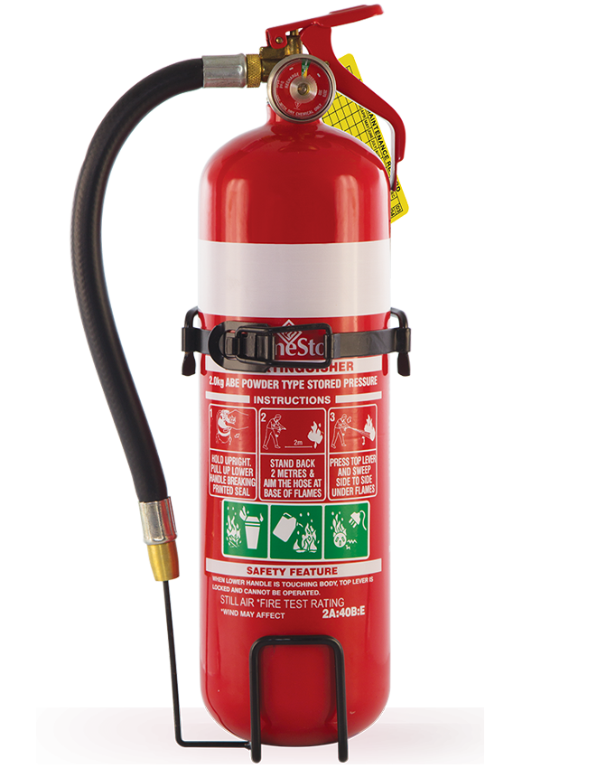

Fire Extinguishers
Water Fire Extinguishers

A water extinguisher is for use on Class A fires, meaning those involving wood, paper, plastics, coal and fabrics. Sometimes known as freely burning materials, on no account whatsoever should water extinguishers be used for firefighting where live electrical equipment or flammable liquids are involved. Water fire extinguishers are colour coded with a red label. Do not be confused with the normal red paint finish on the main body of most types of fire extinguishers. The fire extinguisher works by water under pressure cooling burning material.
Water Plus with Additive Fire Extinguishers

Water Plus with Additive fire extinguishers can be used to tackle Class A fires involving solid combustible materials such as wood, paper, plastics, coal and fabrics, they are ideally suited for use in warehouses, storage units and offices. Water with an additive the fire extinguisher can provide effective fire protection but it is important to remember not to use the extinguisher on electrical fires. Water particles conduct electricity and so can cause harm to the operator if used on electrical appliances however the Hydrospray nozzle of the water additive extinguisher ensures wide and accurate delivery of extinguishing fluid and is tested to 35KV conductivity, keeping you safe if accidentally sprayed onto live electrical equipment. It is common to pair up a water fire extinguisher with a CO2 extinguisher to create all-around protection.
FOAM Fire Extinguishers

Foam or AFFF (Aqueous Film Forming Foam) fire extinguishers are more versatile than water and are lighter in weight compared with water equivalents delivering similar suppressant performance. Foam fire extinguishers can be used for Class A fires, those involving wood, paper, plastics, coal and fabrics as well as Class B fires involving flammable liquids such as petrol, turpentine or paint. However, they are not recommended for fires involving electricity unless the electrical current can be disconnected first. Foam fire extinguishers are colour coded with a cream label and discharges a foam solution under pressure that forms a blanket or film on the surface of a burning liquid creating a barrier between the fire vapours and the air necessary to support combustion thereby smothering the fire.
Carbon Dioxide Fire Extinguishers

A Carbon Dioxide (CO2) fire extinguisher is ideal for fires involving live electrical equipment and Class B fires such as flammable liquids e.g. petrol. They do not work by cooling the fire and therefore not recommended for controlling Class A fires involving wood, paper, plastics, coal and fabrics. CO2 fire extinguishers are colour coded with a black label. CO2 extinguishers discharge gas under pressure replacing the air with inert Carbon Dioxide gas which does not support combustion and because CO2 extinguishers contain no water and leave no residue they are safe to use on sensitive electrical equipment. However, carbon dioxide is a gas and can asphyxiate if inhaled so care should be taken when using in a confined space. During discharge, the horn becomes extremely cold most new CO2 extinguishers are fitted with a double insulated horn to prevent cold burns if handled making them easier and safer to use but caution should be exercised.
Dry Powder Fire Extinguishers

ABC Dry Powder fire extinguishers are extremely versatile and can be used on Class A fires, e.g. wood, paper, plastics, coal and fabrics, Class B fires involving flammable liquids, e.g. petrol, turpentine or paint, and Class C fires involving flammable gases, e.g. hydrogen, butane or methane and live electrical fires, however, if the fire involves computers, the powder residue may damage the equipment. Dry Powder fire extinguishers can be used in environments containing mixed fire risks e.g. factories, garages/workshops and vehicles. However, there is a risk of inhalation when using powder extinguishers indoors, they are not recommended for use within small rooms or where exit routes could be hidden due to poor visibility when discharged. Dry Powder fire extinguishers are colour coded with a blue label. In addition to ABC Dry Powder extinguishers, there are specialist Powder Extinguishers which are designed to tackle fires involving combustible metals such as lithium, magnesium, sodium or aluminium when in the form of swarf or powder. There are three special powders based on graphite, copper and sodium chloride.
Wet Chemical Fire Extinguishers

Wet Chemical Extinguishers are suitable for use on Class A fires meaning those involving wood, paper, plastics, coal and fabrics and ideal for Class F fires typically cooking oils e.g. deep fat fryers or chip-pan fires. Other types of extinguishers such as Water, Foam, Powder and CO2 will not always put out cooking oil fires and are also extremely dangerous because the pressure of these extinguishers can cause the oil to jet out and cause serious harm. Wet Chemical Extinguishers are easily identifiable by the yellow label and are applied using the extended applicator in slow circular movements, which gives a gentle, yet highly effective fine mist or spray onto the burning fat until the surface of the burning cooking oil changes into a soapy-like substance which prevents re-ignition. The gentle application helps to prevent burning oil splashing out of the container. The solution provides a similar blanketing effect to a foam extinguisher, but with a greater cooling effect. The saponification only works on animal fats and vegetable oils, so most Class F extinguishers cannot be used for Class B fires involving flammable liquids, e.g. petrol, turpentine or paint. The misting also helps to prevent splashing the blazing oil.
MultiCHEM Fire Extinguishers

The MultiCHEM extinguisher from CommanderEDGE is a groundbreaking and innovative fire extinguisher. The MultiCHEM is a multi-class fire extinguisher which are not newcomers to the market however the MultiCHEM offers a new solution. The MultiCHEM extinguisher is a high-performance ABF rated extinguisher and with the 34A rating gives the industry’s highest available A rating for a 6-litre extinguisher. The 34A rating means that if an untrained person uses the MultiCHEM they can tackle a large fire. Also, the 233B rating gives an unrivaled efficiency to tackle a flammable liquid fire which involves large amounts of fuel and a big surface area, Finally, the 75F rating enables the extinguisher to be used on Class F fires typically cooking oils e.g. deep fat fryers or chip-pan fires. MultiCHEM fire extinguishers can be used for Class A fires, those involving wood, paper, plastics, coal and fabrics as well as Class B fires involving flammable liquids such as petrol, turpentine or paint. The MultiCHEM extinguisher has also passed the 35kVa Dielectric test which makes it safe if accidentally sprayed onto live electrical equipment. No other extinguisher gives this level of safety to staff and the public with the MultiCHEM extinguisher is compact and easy to handle, so it’s almost impossible to make a mistake.